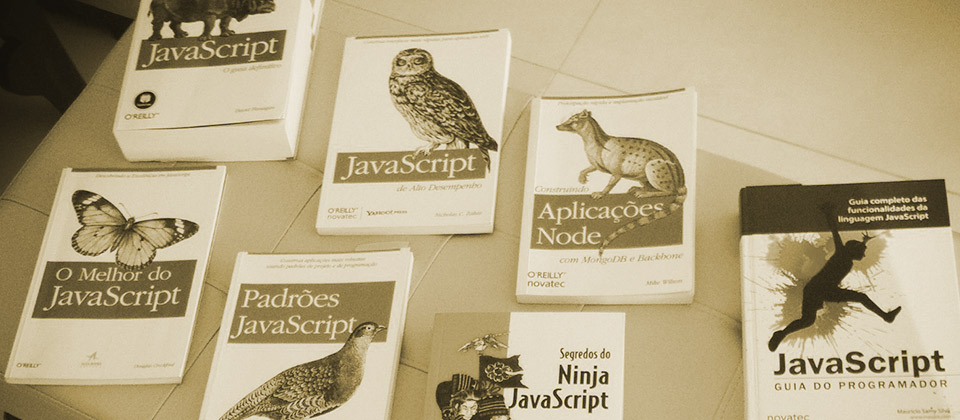
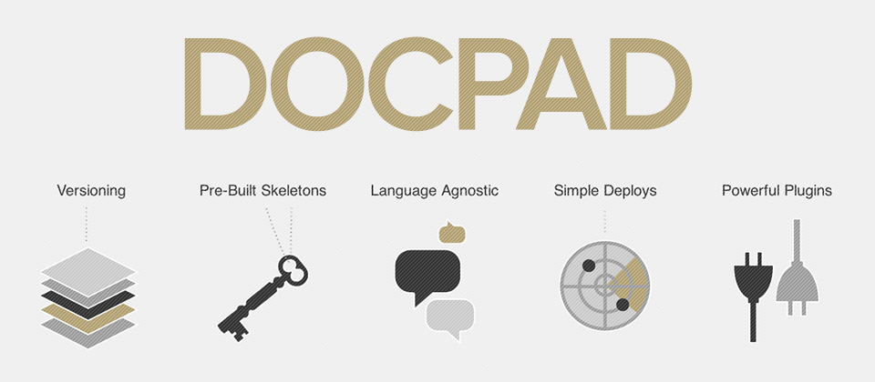

Vitor Britto
Desenvolvedor Web
-

Examinando sua aplicação
07/09/2014 | Por -

The book is on the table
02/09/2014 | Por -
Um universo de APIs
01/09/2014 | Por -
Iniciando os estudos com JavaScript
28/08/2014 | Por -
Experimente Experimentar
23/08/2014 | Por -

Aprendi a dizer adeus
19/08/2014 | Por -
Controlando processos no UNIX
27/07/2014 | Por -

Adicionando caminhos na variável de ambiente PATH
14/07/2014 | Por -

Substituindo o Bower pelo Napa
11/06/2014 | Por -

Agendando tarefas com o Crontab
04/03/2014 | Por -
A Evolução na Automação de Tarefas
22/02/2014 | Por -

Fluxo de Dados
18/02/2014 | Por -

Criando bons programas em Shell Script
15/02/2014 | Por -
Unix: a base de tudo!
14/02/2014 | Por -

Dicas úteis para quem utiliza o GruntJS
03/02/2014 | Por -

Testes sincronizados entre dispositivos móveis
15/12/2013 | Por -

A nova geração Web: estrelando o DocPad
01/12/2013 | Por -
Utilizando LiveReload no Grunt
13/10/2013 | Por -

Compactando o seu Gruntfile
13/10/2013 | Por -

Gerenciando dependências Front-end no seu projeto
11/10/2013 | Por -
Automação de Tarefas no Jekyll
09/10/2013 | Por -
Automação de Tarefas com o Grunt JS - Parte I
06/10/2013 | Por